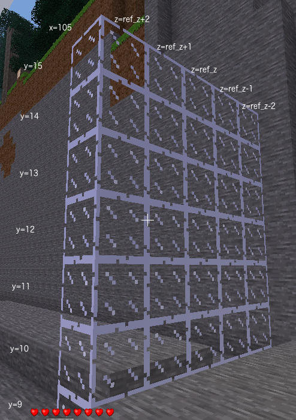

There are several steps to this program which is going to build some arches over the path heading from your signpost in the positive x direction. Each arch will have the same profile as a cross section of the tunnel you have just built.
Build a solid wall of glass 7 high x 5 wide at x = 105. Glass block in the centre at the bottom of the wall should be at y = 9, z = your player z.
This is not one of the tasks assigned by Minetest. It is a repetition of Minetest tasks 4 and 5 with some variations.
The first step is to build a glass wall. This is similar to the first step in building the tunnel which was to build a solid glass cuboid.
path_x_minfloor_yarch_height and arch_widthWe need to calculate the z position of the sides of the arch. We know the z position of the centre of the arch and we know the width of the arch. Hence the formula is
wall_z = ref_z - arch_width // 2
We are going to store the x values of the arches in variable range_x_arch. For testing we
will start with one x value. Let us use the start of the path which is path_x_min.
range_x_arch = path_x_min
Store the external dimensions of the arch in range_y_ext and range_z_ext.
range_y_ext = range(floor_y, floor_y + arch_height)range_z_ext = range(wall_z, wall_z + arch_width)
Remember that the range() function returns a sequence of numbers. For
our purposes the formula above for range_y_ext is equivalent to typing:
range_y_ext = [9, 10, 11, 12, 13, 14, 15]